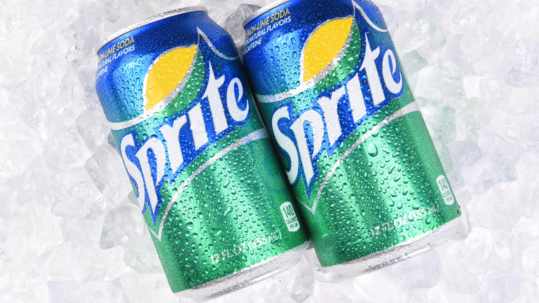

Sprite is a lemon-lime flavored carbonated soft drink that was first introduced in 1961 by The Coca-Cola Company.
It is known for its crisp and refreshing taste, making it a popular choice for quenching thirst.
Sprite is often enjoyed on its own or as a mixer in various cocktails and mocktails.
The brand has expanded to include various flavors and limited-edition releases over the years.
Overall, Sprite is a beloved beverage that has become a staple in the world of carbonated soft drinks.
It is widely available in stores and restaurants around the world, making it easily accessible to consumers.
